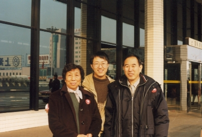
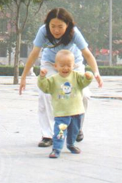

See also:
I grown up in a warm and peaceful family. All the members love each other. There is strong atmosphere of learning and analyzing. You cannot imagine how fortunate I am to be born in such a family.
My father is an electronic engineer. When he resigned, he is already the chief engineer of a large petrochemical cooperation. He also graduated from the Jiao Tong University 40 years ago. My character was largely impacted by him. He taught me to learn, to work hard and to treat people around me warmly.

My mother is a teacher. She taught Chinese in middle schools and primary schools. She asked me to work as hard as possible. Actually, I didn't followed her style too much, so I am still pretty lazy now. :-(
This is my elder brother - Jian Zhao Wang. He ever worked for LPEC, Honeywell, studied in U.S and then working for Stone Web and GE. He loves photography when I was young (that is why I love photography now). He also plays tennis. According to him, he now enjoys driving cars in North America. He and his family are living in Toronto, Canada.
Anna is the daught of Jian Zhao. She was born at January 6, 2001. Her birthday is the same as her grandfather. She is a little girl with large eyes. She never left Canada until December 05, 2001, when she comes back to China for the first time with her parents.
Here comes my elder brother Jian Feng Wang. He loves to play guitar, both classic and electronic. He now lives with me in Shanghai.
Jian Feng had dinner in PizzaHut with Fan Fan and me in December 2001.

My sister-in-law, Xiu Hong Zhang and Bei Bei, playing on the Peony Square in
Luoyang. Bei Bei is 3 years now. He is pretty tall compared to other boys of the
same age. He become more and more naughty recently. Fan Fan and I love him very
much and miss him every time we come back from Luoyang.